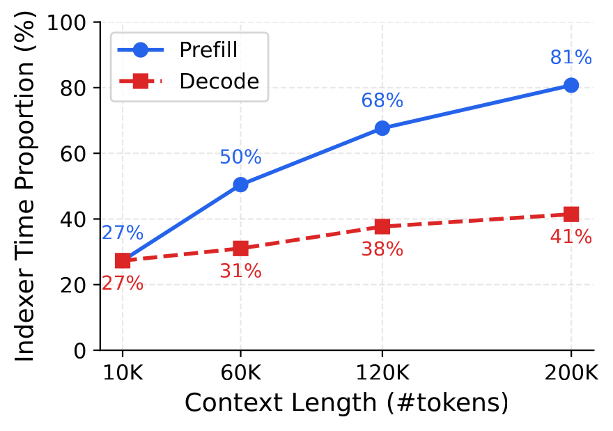
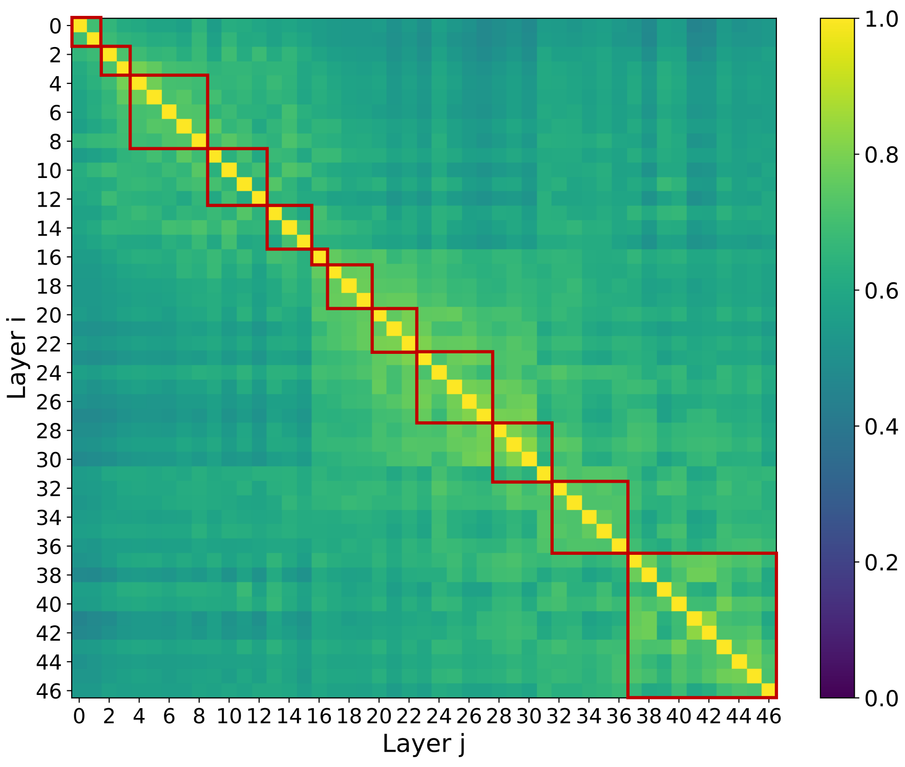
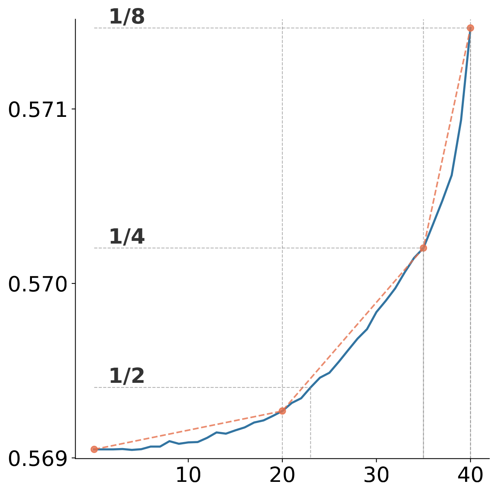
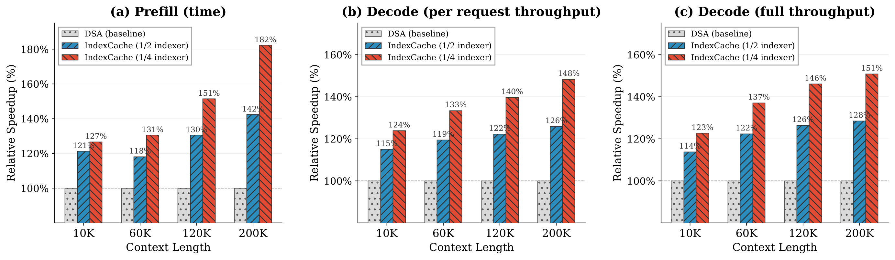
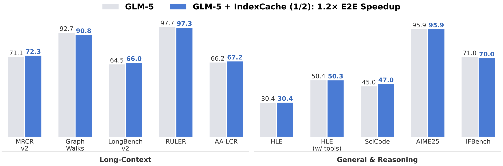

IndexCache：通过跨层索引复用加速稀疏注意力
Yushi Bai, Qian Dong, Ting Jiang, Xin Lv, Zhengxiao Du, Aohan Zeng, Jie Tang, Juanzi Li · 清华大学 & Z.ai · arXiv:2603.12201v1（2026 年 3 月 12 日）
1 背景：DSA 为什么还不够快
自注意力的 $O(L^2)$ 复杂度是长上下文推理的根本瓶颈。稀疏注意力的思路是：每个 query 不再 attend 所有历史 token，而只选最相关的一个子集。其中 DeepSeek Sparse Attention（DSA）是当前少数达到"生产级"的可训练稀疏注意力方案。它把每层注意力拆成两步：
- 选择（selection）：一个轻量级闪电索引器用多头 ReLU 门控点积，为当前 query 给所有历史 token 打分，取分数最高的 top-k（论文中 $k=2048 \ll L$）。索引器刻意做得很省——头数少、低秩投影、FP8 运算，每 FLOP 成本比主注意力 MLA 低一个数量级。
- 计算（computation）：主注意力只在这 $k$ 个 token 上算，于是每层核心注意力从 $O(L^2)$ 降到 $O(Lk)$。
问题在于：索引器虽然"每 FLOP 便宜"，但它本身仍然是 $O(L^2)$ 的——它必须为每个 query 给全部历史 token 打分才能选出自己的 top-k。跨 $N$ 层累加，索引器总成本是 $O(NL^2)$，随上下文长度二次增长。论文对 30B DSA 模型做 profiling 后发现：上下文越长，索引器占总时延的比例越高，尤其在预填充阶段。

1.1 关键观察：top-k 选择的跨层稳定性
作者注意到一个更宏观的经验现象："重要 token"的集合在相邻 Transformer 层之间高度稳定。此前在全注意力模型中，已有工作（Kascade、HySparse）利用这一点——指定少数"锚点层"算全注意力，中间层直接复用锚点层的 top-k 索引。
但这些方法都依赖全注意力作为识别重要 token 的"神谕（oracle）"。而在 DSA 里，全注意力已被彻底替换成了轻量索引器——于是一个尚未被回答的问题浮现出来：索引器的输出本身是否也具有跨层稳定性？如果有，就能在完全不需要全注意力神谕的前提下，套用同样的共享原则去消除冗余的索引器计算。
论文在附录 A 中给出了直接证据：对 47 层的 30B DSA 模型，计算任意两层 top-k 索引的重合率 $|T^{(i)}\cap T^{(j)}|/k$。

这张图把动机收束成一个干净的问题：能否移除 DSA 中大多数索引器，让多数层复用少数保留层的 top-k 索引，而不损失质量？IndexCache 给出了肯定的回答。
2 方法：IndexCache
IndexCache 把 $N$ 层划分成两种角色，编码为一个二值模式串 $c=c_1c_2\cdots c_N$，其中 $c_\ell\in\{F,S\}$：
- F 层（Full）：保留索引器，对所有历史 token 算出新鲜的 $T_t^{(\ell)}$，与标准 DSA 完全一致。
- S 层（Shared）：没有索引器，直接继承最近一个 F 前驱层的索引集，即 $T_t^{(\ell)} \leftarrow T_t^{(f(\ell))}$，其中 $f(\ell)=\max\{j<\ell : c_j=F\}$，然后用这组继承来的索引做稀疏核心注意力。
第一层永远是 F（用于"播种"初始索引）。推理时 S 层只需跳过索引器前向、复用 F 前驱缓存的索引张量——对每层推理循环的唯一改动就是一个条件分支。
T_cache 只是一个临时缓冲区，存当前索引张量，每到 F 层就被覆盖，不需要任何超出标准 DSA 的额外显存。核心注意力的 $O(NLk)$ 部分完全不变，被消除的只是 S 层那部分 $O(L^2)$ 的索引器开销。设计的核心问题随之变成：如何选择模式 $c$？论文给出两条路线。
2.1 训练无关 IndexCache：贪心层选择
为什么均匀间隔（uniform interleaving）不行。最朴素的策略是每隔 $r$ 层保留一个索引器（如 $r=4$ 时模式为 FSSSFSSS…）。但它忽略了一个事实：不同层的索引器重要性差异巨大。作者经验性发现，处于网络早期和过渡区域的某些层对索引器移除尤其敏感。均匀间隔可能恰好删掉一个关键索引器、却留下一个冗余的，导致明显的质量下降。
贪心搜索算法。于是改用数据驱动的方法——让模型自己告诉我们哪些索引器可以删。用一小批校准集上的语言建模损失（LM loss）作为下游质量的代理：
从全 F 基线出发，每一步遍历所有当前的 F 层（除第一层），逐个试探翻成 S、评估 LM loss，提交损失最低的那次翻转，共 $K$ 步（如 $K=3N/4$ 即保留 1/4 索引器）。校准集固定缓存 $B$ 个 mini-batch，保证所有候选模式在同一批数据上评估，使损失差异只反映模式变化、不掺杂数据方差。
复杂度与工程加速。从全 F 到全 S 的完整搜索需 $N(N-1)/2$ 次前向。当用流水线并行把模型切成 $P$ 段时，可把层分成 $P$ 块（每块首层固定为 F）并在每一步内顺序搜索各块——每步最多放置 $P$ 层，总前向次数约降为原来的 $1/P$。

2.2 训练感知 IndexCache：多层蒸馏损失
训练无关方法不改权重，但受限于一个事实：每个索引器最初只被训练去服务它自己那一层。如果我们能从头训练或继续预训练 DSA 模型，就能做得更好——显式地训练每个保留的索引器去同时服务多个层。
在标准 DSA 训练中，第 $\ell$ 层的索引器通过 KL 散度对齐自己那层的聚合注意力分布 $p_t^{(\ell)}$：$\mathcal{L}_I^{(\ell)}=\sum_t D_{KL}(p_t^{(\ell)}\,\|\,q_t^{(\ell)})$，其中 $q_t^{(\ell)}=\mathrm{Softmax}(I_t^{(\ell)})$ 是索引器输出分布。论文把它推广到多层目标：设第 $\ell$ 层是保留的 F 层，其后 $\ell+1,\dots,\ell+m$ 是将复用它索引集的 S 层，则
直觉是：让 F 层的索引器去预测一个对它所服务的所有层都有用的 top-k 集合，而不是只过拟合到第 $\ell$ 层自己。各符号含义——$p_t^{(\ell+j)}$ 是第 $\ell+j$ 层在位置 $t$ 的聚合注意力分布（跨头平均 softmax 权重得到）；$q_t^{(\ell)}$ 是 F 层索引器的输出分布；$m+1$ 是该 F 层服务的层数（含自己）；外层 $\sum_t$ 遍历所有 query 位置。
2.3 梯度等价性：多层蒸馏 = 对"平均分布"蒸馏
一个自然的担忧是：把多个 KL 项加起来，会不会引入意料之外的交互？论文证明它有一个干净的解释——多层损失与"对单个平均目标蒸馏"产生完全相同的梯度。定义平均目标 $\bar{p}_t = \sum_{j=0}^{m}\frac{1}{m+1}p_t^{(\ell+j)}$，及对应的单目标损失：
证明思路. 在 $D_{KL}(p\|q_t^{(\ell)})$ 中，只有 $q_t^{(\ell)}$ 依赖参数 $\theta$，目标分布 $p$ 的熵项对 $\theta$ 求导为零，故 $\nabla_\theta D_{KL}(p\|q_t^{(\ell)}) = -\nabla_\theta\sum_s p(s)\log q_t^{(\ell)}(s)$。代入式 (1) 并交换求和次序：
解读。命题 1 说明多层蒸馏不是一个启发式正则项，而是精确等价于把索引器蒸馏到"所服务各层注意力分布的质心（centroid）"。索引器因此学到一个跨层都成立的"共识 top-k"。
为什么实现上仍用 $\mathcal{L}_I^{\text{multi}}$？两者梯度相同，但 $\mathcal{L}_I^{\text{avg}}$ 需要把 $q^{(\ell)}$ 和 $p^{(\ell)}$ 都传给后续 S 层，带来不必要的显存与运行时开销；而 $\mathcal{L}_I^{\text{multi}}$ 下 S 层只需接收当前层预测的 $q^{(\ell)}$，更省。训练流程沿用 DSA 的两阶段：暖身阶段只用 $\mathcal{L}_I^{\text{multi}}$ 训 F 层索引器（冻结其余参数）；稀疏训练阶段继续用 $\mathcal{L}_I^{\text{multi}}$（仅在选中的 top-k token 上算 KL）并加入 LM loss 训练其余参数。
3 实验：加速与精度
- 30B DSA 模型：由 GLM-4.7-Flash（30B-A3B MoE、MLA、47 层）的 base 模型经两阶段训练得到，性能与原版 GLM-4.7-Flash 相当。
- 训练无关：贪心搜索用 SFT 数据的逐 token 验证损失引导，batch=768、上下文 200K。
- 训练感知：从 GLM-4.7-Flash 直接初始化，在 200K 上下文 SFT 数据上做 1,000 步密集暖身 + 4,000 步稀疏训练（精简版流水线）。
- 评测：5 个长上下文基准（MRCR v2、GraphWalks、LongBench v2、RULER、AA-LCR）+ 4 个通用/推理基准（AIME 2025、GPQA-Diamond、LiveCodeBench v6、IFBench）。
- 服务环境：SGLang（dp attention，dp size=8）、单台 NVIDIA H100 节点。
3.1 端到端推理加速

| 指标 @200K | DSA | +IndexCache(1/2) | +IndexCache(1/4) |
|---|---|---|---|
| 预填充时间 (s) ↓ | 19.5 | 13.7 | 10.7 (1.82×) |
| 单请求解码 (tok/s) ↑ | 58.0 | 73.0 | 86.0 (1.48×) |
| 满 KV 缓存吞吐 (tok/s) ↑ | 197 | 253 | 297 (1.51×) |
3.2 训练无关 IndexCache 结果
表 2 在同一 30B DSA 模型上对比三种保留比（1/2、1/4、1/8），每种都有"均匀间隔"和"贪心搜索模式"两个版本。核心结论："保留哪些层"远比"保留多少层"重要。
| 配置 | Long 均分 | G&R 均分 | RULER | AIME |
|---|---|---|---|---|
| 原始 DSA | 50.2 | 74.6 | 87.9 | 91.0 |
| 1/2 均匀间隔 | 47.4 | 74.3 | 83.6 | 92.2 |
| 1/2 + 搜索模式 | 50.3 | 74.4 | 87.8 | 91.9 |
| 1/4 均匀间隔 | 43.0 | 73.8 | 79.2 | 91.3 |
| 1/4 + 搜索模式 | 49.9 | 74.9 | 87.6 | 92.6 |
| 1/8 均匀间隔 | 35.3 | 70.0 | 68.8 | 89.1 |
| 1/8 + 搜索模式 | 46.1 | 73.7 | 82.0 | 90.7 |
- 搜索模式弥合了长上下文鸿沟。均匀间隔在 1/2、1/4 下分别使 Long 均分掉 2.8、7.2 分（50.2→47.4、→43.0）；贪心搜索几乎完全补回（→50.3、→49.9），与原始 DSA 持平。
- 推理能力被完整保留。除 1/8 均匀间隔外，所有配置的 G&R 均分都在基线 74.6 的 1 分以内。值得注意的是，1/4 搜索模式在 AIME 2025（92.6 vs 91.0）和 GPQA（78.6 vs 77.6）上甚至超过了 DSA——暗示移除冗余索引器计算可能在推理时起到了轻微的正则化作用。
- 1/8 是极限。保留比降到 1/8 时即使有搜索模式，Long 均分也跌到 46.1，长上下文退化已不可忽略。
3.3 训练感知 IndexCache 结果
表 3 用多层蒸馏损失在 1/2、1/4 保留比（均为均匀间隔）下训练，并在 1/2 下消融两个设计：替换为搜索模式、移除跨层损失。
| 配置 | Long 均分 | G&R 均分 | AA-LCR |
|---|---|---|---|
| 原始 DSA | 51.0 | 74.2 | 47.0 |
| 1/2 均匀间隔 | 51.6 | 74.5 | 49.8 |
| 1/2 + 搜索模式 | 50.6 | 73.6 | 46.6 |
| 1/2 w/o 跨层损失 | 49.8 | 74.5 | 44.0 |
| 1/4 均匀间隔 | 50.6 | 74.1 | 48.4 |
- 训练感知可匹配甚至超过基线。1/2 均匀间隔 Long 均分 51.6 > 基线 51.0；1/4 时两项均分都在基线 0.4% 以内。
- 训练后，"模式敏感性"消失了。与 §3.2 形成鲜明对比：训练感知下，均匀间隔（51.6）甚至略胜搜索模式（50.6）。原因是——训练无关时某些层与自己的索引器强耦合，继承别层索引会引入分布漂移；而重训后 S 层学会适应继承来的索引，F 层索引器也学会产生可泛化的选择，这种联合适应彻底消除了层特异敏感性，于是简单的均匀模式就够了。
- 跨层蒸馏确有价值。移除跨层损失后 Long 均分从 51.6 跌到 49.8，AA-LCR 从 49.8 跌到 44.0——证明"向所服务各层的质心蒸馏"学到的共识 top-k 确实优于"只对自己那层蒸馏"。
3.4 GLM-5（744B）规模验证
作者把训练无关 IndexCache 应用到默认使用 DSA 的 GLM-5（744B 参数、40B 激活）。表 4 在五个长上下文基准上的结论与 30B 一致：均匀间隔在激进保留下退化，搜索模式恢复质量。
| 配置 | Long 均分 | MRCR v2 | GraphWalks | RULER |
|---|---|---|---|---|
| 原始 DSA | 78.4 | 71.1 | 92.7 | 97.7 |
| 1/2 均匀间隔 | 78.1 | 72.8 | 90.2 | 97.6 |
| 1/2 + 搜索模式 | 78.7 | 72.3 | 90.8 | 97.3 |
| 1/4 均匀间隔 | 72.7 | 65.8 | 74.9 | 96.2 |
| 1/4 + 搜索模式 | 78.0 | 70.8 | 90.3 | 97.6 |
GLM-5 上 1/2 均匀间隔恰好保住了 Long 均分（78.1 vs 78.4），但作者明确指出这很可能是巧合——固定交替模式碰巧没跳过最关键的索引器层；而搜索模式给出稳定结果：1/2 时略超基线（78.7），1/4 时仍在 0.4 分内（78.0）。Figure 1 进一步显示，1/2 保留的 IndexCache 在 Artificial Analysis Index 全面评测上与原版 GLM-5 几乎一致。

4 深度分析
4.1 一个诚实的负面结果：基于相似度的搜索为什么失败
论文专门用附录 C 报告了一个不成功的尝试——在确定贪心 LM-loss 搜索之前，作者先试过一个看似更自然、计算更省的方案：直接用"复用索引时注意力输出有多相似"来选共享模式。
具体做法：对每个层对 $(i,j)$（$i>j$），计算"第 $i$ 层用自己索引器的核心注意力输出"与"第 $i$ 层改用第 $j$ 层索引器的输出"之间的余弦相似度 $S_{i,j}$，得到一个 $N\times N$ 下三角相似度矩阵。然后用动态规划精确求解最大化总相似度的模式：
DP 转移为 $dp[i][k]=\max_{j<i}\big(dp[j][k-1]+\sum_{m=j+1}^{i-1}S_{m,j}\big)$，回溯即得最优模式。
为什么失败？逐层输出相似度是局部指标：它只衡量单层注意力输出在孤立状态下保留得多好，却不考虑微小扰动如何沿后续层传播。两层可能 $S_{i,j}\approx 1$，但复用的索引漏掉了少数"关键 token"，其重要性要到更晚层的推理步骤才显现；这些细微失配逐层累积，造成局部相似度分数无法预测的最终质量退化。贪心 LM-loss 搜索之所以成功，正是因为它直接优化全局指标（端到端 LM loss），能识别那些"必须保留、否则会引发级联错误"的关键层。
这一负面结果也呼应了 Figure 4 的观察：红框（贪心块）与热力图的视觉聚类不完全重合，因为早期层的扰动要走最长的传播路径，即便重合率很高也格外脆弱——聚合的重合率/相似度指标天然缺乏这种判别力。
4.2 搜索得到的模式长什么样
附录 B 给出了实际搜索出的模式（节选）。可以直观看到它不是均匀的——早期层 F 更密集，越往后越敢于共享：
4.3 与既有工作的区别
TidalDecode、LessIsMore、OmniKV、DELTA、Kascade、HySparse 等跨层共享方法都依赖锚点层的全注意力来算精确 top-k，而 DSA 已彻底移除了全注意力。IndexCache 的两点不同：(1) 神谕本身更便宜——共享的是 DSA 轻量索引器的输出，而非 $O(L^2)$ 的全注意力分数；(2) 系统化的配置优化——训练无关贪心搜索定位最优结构布局，训练感知多层蒸馏做参数适配。作者还指出，其核心原则可推广到任何含动态 token 选择步骤的稀疏注意力（如 MoBA、NSA 的块级选择）。
5 局限与展望
- 极端稀疏的下限。1/8 保留时长上下文退化已不可忽略（训练无关下 Long 均分 50.2→46.1），说明跨层复用并非无止境，存在一个质量拐点。
- 训练无关对模式敏感。不重训时必须依赖贪心搜索来避开敏感层；均匀间隔在激进保留下会显著掉点。好在训练感知可消除这一敏感性。
- GLM-5 上仅验证了训练无关版本。744B 模型上的训练感知 IndexCache 尚未完成，作者列为近期计划，并预期它会进一步巩固收益。
- 贪心非全局最优。算法不保证全局最优解，依赖 LM loss 作为下游质量的代理（论文论证了二者正相关，但仍是代理）。
6 核心总结
- 问题被精准定位：DSA 把核心注意力降到 $O(Lk)$ 后，"便宜但 $O(L^2)$"的索引器在长上下文下反而成为预填充阶段的主导开销（200K 时占 81%）。
- 洞察简单而有力：DSA 索引器的 top-k 选择具有跨层稳定性（相邻层重合 70–100%），可用少数 F 层 + 多数 S 层复用来消除冗余，仅需一个条件分支、零额外显存。
- 两条互补路线：训练无关用贪心 LM-loss 搜索定位关键层（"留哪些"比"留多少"重要）；训练感知用多层蒸馏损失（等价于向质心蒸馏），让简单均匀模式也能匹配满索引器基线。
- 实测收益扎实：30B 上移除 75% 索引器、质量几乎无损，预填充 1.82×、解码 1.48×；744B GLM-5 上确认 ≥1.3× 加速、质量与原版几乎一致。
- 更广的意义：把"跨层共享只能依赖全注意力神谕"这一前提，扩展到了"稀疏注意力本身的索引器输出"。随着稀疏注意力成为前沿 LLM（DeepSeek-V3.2、GLM-5）的默认配置，跨层索引复用有望成为高效推理流水线的标准组件。
来源链接
- 论文：IndexCache: Accelerating Sparse Attention via Cross-Layer Index Reuse，arXiv:2603.12201（清华大学 & Z.ai，2026-03-12，COLM 2026 投稿格式）
- arXiv 摘要页：https://arxiv.org/abs/2603.12201
- 基座模型 GLM-4.7-Flash：https://huggingface.co/zai-org/GLM-4.7-Flash
- 相关工作：DeepSeek-V3.2（DSA，arXiv:2512.02556）、GLM-5（arXiv:2602.15763）、HySparse（arXiv:2602.03560）、Kascade（arXiv:2512.16391）
本报告为论文的中文深度解读，所有图片均提取自论文 arXiv 源文件。数据与结论以原论文为准。